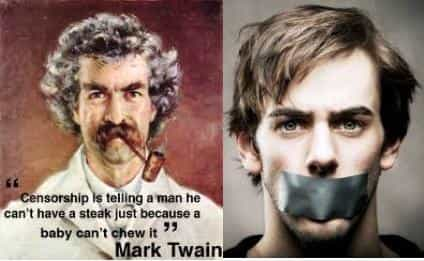

Wrand was a professor of creative writing, African American literature and cultural studies at a major United States university. He is now an expatriate writer and ESL teacher living in Mexico.


Or is Norton now holding the leash?
Norton—yeah, the technology company that makes the crappy antivirus programs—has decided to block a list of men’s rights websites which they have labeled “hate sites.” When the list of sites newly blocked by Norton was published, the first reactions I saw comprised elaborate justifications and defenses focused on the term “hate site.” I countered that with my comment: “I understand that we have to fight—maybe I’m looking forward to it—but please let’s not bow down, justifying and explaining ourselves to these political correctness, capitalistic, conformist drones.” I followed it with a call to avoid Norton products. I now think that I was also drifting from the point and focusing too much on reactions to the label.
The issue should be neither the definition of a “hate site” nor whether the websites on the list are, in fact, hate sites. We are fooling ourselves with too much concern for following politically acceptable labels and avoiding giving offense. The issue behind the Norton site blockage is neither the classification of the sites nor whether they offend anyone. The central issue really relates to social control through censorship, ultimately a question of constitutionally guaranteed freedoms.

Most courteous, civilized, reasonably sober people naturally try to avoid giving offense, under normal circumstances. However, we have reached a point in society where some previously disadvantaged groups, notably feminists, use the concepts of “offense” and “oppression” to gain social, economic and political power. Their tools are social aggression and censorship. Another commenter on the same forum remarked that the real mistake Norton is making is allowing themselves to be partisan between groups of people of strongly differing opinions by offering, what is effectively, a “morality judgement service”. Morality judgment is essentially what censorship in our society does, using labeling as one of its weapons. The result is power for the judges who can then tell us what we can or cannot say, how we can or cannot live, what we are allowed to think.
That kind of power is something we give up voluntarily through intimidation and learned shame. Feminists rant, and men hang their heads and apologize. A generation of men, raised by single mothers, has been taught to feel shame and guilt because of what they have been told about the way their grandfathers supposedly treated their grandmothers. Considering historical concerns of imbalances in employment and compensation, that may sound like a gross simplification, but that conclusion is the blue pill talking.
No one doubts, for instance, that racism exists in the United States. Discrimination also exists against immigrants, fat people, bald people, old people, homosexuals, the disabled and others. Nevertheless, social oppression today is not the same as it was in my father’s time. The social status of some groups, relative to each other, have actually reversed, despite continued ranting by the supposed disadvantaged group. Middle-class women now earn more than middle-class men. More women enroll in college and graduate. High school girls (pardon me, young women) outperform boys in reading and writing. The only statistic in which men now strongly lead is in the suicide rate. Still, we must, at all costs, avoid giving verbal offense to anyone, most of all to women.
Everyone knows the hateful, derogatory words that groups use in order to shame, silence, denigrate or otherwise control people of other groups, including sexist words like: creep, pig and misogynist. Everybody seems to be part of a group that somebody else doesn’t like. By historical United States racial classifications, I am African American. I am also a heterosexual man, so, somehow, the politically correct power structure has put me in the position of oppressed and oppressor. How schizophrenic is that? Evidently, that is life, and not the point here.
The point should no longer be the word, the classification, the rant, the possible offence. The point should be the use of power as it applies to our basic, human rights—everyone’s rights. The comedian Lenny Bruce (1925-1966) said, “Take away the right to say fuck, and you take away the right to say fuck the government.” Now, judging by United States laws and court system, women seem to run the government and social structure of the country. Mike Buchanan says in Feminism, The Ugly Truth: “Any man prepared to comment objectively about women—even about a small group of women such as feminists—is automatically and immediately branded a sexist or a misogynist, often both. Once denounced as a sexist or a misogynist, a man must be reviled or avoided.” Does that sound like “the land of the free” or more like Nathaniel Hawthorne’s novel and critique against Puritanism and conformity, The Scarlet Letter?
We men are restricted now, not only in lifestyle but in speech. Feminists have convinced us to give up rights guaranteed to us by the First Amendment to the United States Constitution. How? In many ways, we silence ourselves, but Norton is helping out. In blocking websites, Norton has used the tools of political correctness and avoidance of giving offense to move censorship to the level of open and official corporate policy. Free speech is already a distant memory on United States universities. How long before speech restrictions return to government, as in the days of Lenny Bruce’s imprisonment?
The First Amendment guarantees freedom of speech and freedom of the press. In the way that they disseminate information, news, commercial advertisements and public opinion, it seems that contemporary websites constitute a media of the press, despite Puritanistic ranting against porn. Feminists and other political correctness oppressors, hiding behind Norton, are trying to restrict those basic constitutional freedoms.
The UK newspaper Daily Mail refers to what we have here as “political correctness gone mad.” Norton’s block list, restricting what it has labeled (or been told to label) as “hate sites” may seem like a small step now, but it could be the step that makes political correctness dangerous for us all.